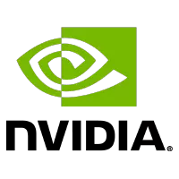
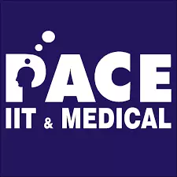

Experience
Verification Engineer
NVIDIA
Duration: 2021 - Present
Location: Bengaluru, India

During my time at NVIDIA, I have worked on IP verification of SoC designs catering to automotive and data center applications. I have worked on IPs designed for various purposes, including hardware safety management (ISO26262), Reliability-Accessibility-Serviceability (RAS), ARM-Cortex processors, RISC-V processors, power management, always-on functionalities and more.
My verification responsibilities for each IP has included both unit and chip level verification, new feature testing, testbench design, coverage closure, emulation & post-silicon validation. I have also developed and maintained APIs, global checkers and automations for cross-team usage.
I have recently started work in performance-based cluster verification for the Spectrum ethernet switches. I have also developed AI-based tools & automations for various verification tasks which have simplified processes and quickened debugs significantly.
I am also part of the office's music club called 'The 5-to-9ers', taking initiatives to manage and perform live shows and produce music videos. I am also active in the office's football & cricket teams, having represented NVIDIA in corporate tournaments. I am also part of the office's dance club, participating from time to time.
Hardware Intern
NVIDIA
Duration: May - June 2020 (2 months)
Location: Remote
During my two-month internship at NVIDIA, my responsibilities were related to design & verification of a protocol-converter IP. At the end of my internship, I had delivered the design enhancement of the protocol-converter and had learned & successfully applied concepts in formal verification to validate these enhancements.
Education
National Institute of Technology Karnataka
B.Tech. in Electronics & Communication Engineering
Duration: 2017 - 2021
Location: Surathkal, Karnataka
Grade: 9.44 CGPA

I spent four wonderful years at the NITK Surathkal campus. Balancing between my academics and hostel life was a great learning curve.
I completed courses on various electronic subjects like digital design systems, embedded systems, VLSI design, analog electronics & computer architecture.
I actively indulged in self-learning of various topics like machine learning, data analytics, statistical analysis, neural networks & web development, which helped me win several hackathons and join different clubs like IEEE NITK, IRIS Labs & Web Enthusiasts' Club. I was also part of the NITK Music Club playing keyboard.
PACE Junior Science College
Maharashtra H.S.C
Duration: 2015 - 2017
Location: Mumbai, Maharashtra
Grade: 91.38%
